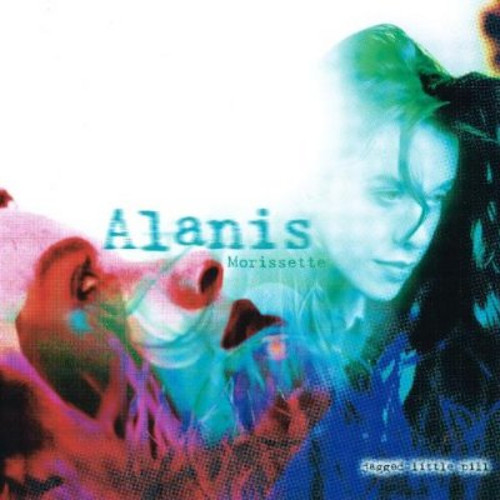

25 Years
of Perl
(In about 25 minutes)
Dave Cross <dave@perlhacks.com>

1987/8
1987/8
Perl 1.0 (and 2.0) Released!
1987/8 Releases
- Dec-18 1.000
- Jan-30 1.001..10
- Feb-02 1.011..14
- Jun-05 2.000
- Jun-21 2.001
1987/8 Community
- First JAPH
1987/8 Technical
- Perl
1987/8 Books
- man perl
1989
1989
Perl 3.0 Released
1989 Releases
- Oct-18 3.000
- Nov-11 3.002..4
- Nov-18 3.005
- Dec-22 3.006..8
1989 Community
- comp.lang.perl
1989 Technical
- Binary data
1989 Books

1990
1990
Black Perl
1990 Releases
- Mar 3.009..18
- Aug 3.019..28
- Oct 3.029..37
- Nov 3.040..41
1990 Community
- Perl poetry
1990 Technical
1990 Books

1991
1991
Pink Camel published
1991 Releases
- Jan 3.042..044
- Mar 4.000
- Apr 4.001..3
- Jun 4.004..10
- Nov 4.011..19
1991 Community
- Artistic Licence
1991 Technical
- Perl 4
1991 Books
- Programming Perl
1992
1992
MacPerl
1992 Releases
- Jun 4.020..35
1992 Community
1992 Technical
- MacPerl
1992 Books

1993
1993
Pink Llama published
1993 Releases
- Feb-05 4.036
1993 Community
- Perl Packrats
1993 Technical
- cgi-lib.pl
1993 Books
- Learning Perl
1994
1994
Perl 5 Released
1994 Releases
- Oct-17 5.000
1994 Community
- Perl 5 Porters
1994 Technical
- Perl 5
- DBI
- CGI
1994 Books

1995
1995
CPAN launched
1995 Releases
- Mar-13 5.001
1995 Community
- perl.com
- perl.org
- comp.lang.perl.misc
1995 Technical
- CPAN
- Schwartzian Transform
- Matt's Script Archive
- LWP
- DBD::mysql
- RSA encryption/decryption
1995 Books

1996
1996
The Perl Journal
1996 Releases
- Feb-29 5.002
- Mar-25 5.002_01
- Jun-25 5.003
- Jul-31 5.003_01
- Aug 5.003_02..03
- Sep 5.003_04..05
- Oct 5.003_06..07
- Nov 5.003_08..10
- Dec 5.003_11..17
1996 Community
- The Perl Journal
1996 Technical
- mod_perl
- CPAN shell
- Test::Harness
- Zeroth Annual Obfuscated Perl Contest
1996 Books
- Perl 5 Desktop Reference
- CGI Programming on the World Wide Web
- Programming Perl (2ed)

1997
1997
The Perl Conference
1997 Releases
- Jan 5.003_19..23
- Feb 5.003_24..28
- Mar 5.003_90..95
- Apr 5.003_96..98
- May 5.003_99..99a
- May-15 5.004
- Jun-13 5.004_01
- Aug-07 5.004_02
- Sep-05 5.004_03
- Oct-15 5.004_04
1997 Community
- The Perl Conference
- New York Perl Mongers
1997 Technical
- purl
1997 Books
- Learning Perl (2ed)
- Advanced Perl Programming
- Learning Perl on Win32 Systems
- CGI Cookbook
- Effective Perl Programming
- Perl Resource Kit

1998
1998
London Perl Mongers
1998 Releases
- Jul-22 5.005
- Jul-27 5.005_01
- Aug-08 5.005_02
1998 Community
- The Perl Institute
- London Perl Mongers
1998 Technical
- CPAN Testers
- OnePerl
- HTML::Mason
- POE
- XML::Parser
1998 Books
- MacPerl: Power and Ease
- The Perl Cookbook (1ed)
- Perl 5 Pocket Reference (2ed)
- Perl in a Nutshell
- Perl for Dummies (2ed)
1999
1999
First YAPC
1999 Releases
- Mar-28 5.005_03
- Apr-29 5.004_05
1999 Community
- TPC becomes OSCON
- First YAPC::NA
- German Perl Workshop
- Perlmonth
- White Camel Awards
- Yet Another Society
- Rhizomatic (irc.perl.org)
1999 Technical
- Template Toolkit
- Class::DBI
- Perl Power Tools
- Perl Golf
1999 Books
- Learning Perl/Tk
- Programming Web Graphics with Perl & Gnu Software
- Writing Apache Modules with Perl and C
- Object Oriented Perl
- Mastering Algorithms with Perl
- Perl CD Bookshelf
- Elements of Programming with Perl
- Teach Yourself Perl in 24 Hours
- Perl and CGI for the World Wide Wed (1ed)
2000
2000
Coffee Cups
2000 Releases
- Mar-22 5.6.0
2000 Community
- First YAPC::EU
- Perl Monks
- First Perl Whirl
- Perl Advent Calendar
2000 Technical
- Perl 6 (announced)
- Testing Revolution
- ActivePerl
- Symbol::Approx::Sub
2000 Books
- Programming the Perl DBI
- Perl 5 Pocket Reference (3ed)
- Perl for System Administration (1ed)
- CGI Programming with Perl (2ed)
- CGI Programming 101 (1ed)
- Beginning Perl (1ed)
- Programming Perl (3ed)
- Debugging Perl
- Perl for Dummies (3ed)
- The mod_perl Pocket Reference
2001
2001
Damian Conway works for us
2001 Releases
- Apr-08 5.6.1
2001 Community
- use.perl.org launched
- Perl Monks and Perl Mongers join YAS
- YAS forms The Perl Foundation
- YAPC Auctions
- Parrot (April Fool)
2001 Technical
- Acme::*
- Parrot
- Test::Builder
- Movable Type
2001 Books
- Network Programming with Perl
- Data Munging with Perl
- Perl: The Complete Reference
- Perl CD Bookshelf Version 2.0
- Professional Perl Programming
- Instant Perl Modules
- Writing CGI Applications with Perl
- Perl Debugged
- Professional Perl Development
- Instant CGI/Perl
- Perl and CGI for the World Wide Wed (2ed)
- Learning Perl (3ed)
- Perl Developer's Dictionary
- Perl for the Web
- MySQL and Perl for the Web
- Perl for Web Site Management
- Beginning Perl for Bioinformatics
- Core Perl
2002
2002
nms
2002 Releases
- Jul-18 5.8.0
- Dec-18 1.0.15
2002 Community
- nms
- The Perl Review
2002 Technical
- CPANPLUS
- WWW::Mechanize
2002 Books
- mod_perl Developer's Cookbook
- Modern Perl Programming
- Web Development with Apache and Perl
- Perl and XML
- Perl in a Nutshell (2ed)
- Graphics Programming with Perl
- Teach Yourself Perl in 21 Days (2ed)
- Perl Pocket Reference (4ed)
- Perl & LWP
- Perl Black Book
- Perl for C Programmers
- Extending and Embedding Perl
- Writing Perl Modules for CPAN
- Perl for Oracle DBAs
- Teach Yourself CGI in 24 Hours (2ed)
- Embedding Perl in HTML with Mason
- XML and Perl
- The Perl CD Bookshelf Version 3.0
- Best of the Perl Journal: Computer Science and Perl Programming
- Programming Web Services with Perl
- Perl Graphics Programming
2003
2003
Perl On New Internal Engine
2003 Releases
- Sep-25 5.8.1
- Nov-04 5.8.2
- Nov-15 5.6.2
- Dec-18 1.0.16
2003 Community
- PONIE
- A Conference Toolkit
2003 Technical
- Email::Simple
- DateTime
2003 Books
- Best of the Perl Journal: Web Graphics & Perl/Tk
- Perl for Dummies (4ed)
- Practical mod_perl
- Mastering Perl for Bioinformatics
- Learning Perl Objects, References and Modules
- Perl 6 Essentials
- Perl Cookbook (2ed)
- Perl in Easy Steps
- Perl Template Toolkit

2004
2004
Catalyst
2004 Releases
- Jan-14 5.8.3
- Feb-23 5.005_04
- Apr-21 5.8.4
- Jul-19 5.8.5
- Nov-27 5.8.6
2004 Community
- Catalyst community
2004 Technical
- Maypole
- Catalyst
2004 Books
- Perl Debugger Pocket Reference
- CGI Programming 101 (2ed)
- Perl Medic
- The Perl CD Bookshelf Version 4.0
- Perl 6 and Parrot Essentials (2ed)
- Best of the Perl Journal: Games, Diversions & Perl Culture
- Beginning Perl (2ed)
- Randal Schwartz's Perls of Wisdom

2005
2005
DBIx::Class
2005 Releases
- May-30 5.8.7
2005 Community
- Google Summer of Code
- Planet Perl
- Perl Mongers Census
2005 Technical
- DBIx::Class
- Pugs
2005 Books
- Pro Perl
- Higher Order Perl
- Teach Yourself Perl in 24 Hours (3ed)
- Advanced Perl Programming (2ed)
- Perl Best Practices
- Perl Testing: A Developer's Notebook
- Learning Perl (4ed)

2006
2006
Moose
2006 Releases
- Jan-31 5.8.8
2006 Community
2006 Technical
- Moose
- Plagger
2006 Books
- Beginning Perl Web Development
- Perl Hacks
- Minimal Perl

2007
2007
Strawberry Perl
2007 Releases
- Dec-18 5.10.0
2007 Community
- Perl Buzz
- $foo Magazin
2007 Technical
- Strawberry Perl
2007 Books
- Mastering Perl
- mod_perl 2 Users' Guide
- Perl by Example (4ed)
- Catalyst
2008
2008
Marketing
2008 Releases
- Dec-14 5.8.9
2008 Community
- QA Hackathon
- Copenhagen Marketing BOF
- Enlightened Perl Organisation
2008 Technical
- Test Anything Protocol
- Dist::Zilla
- Mojolicious
2008 Books
- Learning Perl (5ed)
- Professional Perl and MySQL
2009
2009
PSGI
2009 Releases
- Aug-22 5.10.1
2009 Community
- Send-a-Newbie
- Iron Man
- blogs.perl.org
- New perl.org
2009 Technical
- PSGI/Plack
- Dancer
2009 Books
- Automating System Administration with Perl
- Definitive Guide to Catalyst
2010
2010
Rakudo *
2010 Releases
- Apr-12 5.12.0
- May-16 5.12.1
- Sep-06 5.12.2
2010 Community
- Annual release cycle
2010 Technical
- Rakudo *
- App::cpanminus
- metacpan
2010 Books
- Catalyst 5.8: The Perl MVC Framework
- Effective Perl Programming (2ed)
- Beginning Perl (3ed)

2011
2011
Money!
2011 Releases
- Jan-21 5.12.3
- May-14 5.14.0
- Jun-16 5.14.1
- Jun-20 5.12.4
- Sep-26 5.14.2
2011 Community
- Perl Weekly
- Perl News
- New perl.com
- TPF Perl Core Maintenance Fund
2011 Technical
- Carton
2011 Books
- Learning Perl (6ed)
- Perl 5 Pocket Reference (5ed)
- Modern Perl (2ed)

2012
2012
New Camel
2012 Releases
- May-20 5.16.0
- Aug-08 5.16.1
- Oct-12 5.14.3
- Nov-01 5.16.2
- Nov-10 5.12.5
2012 Community
- Community Summit
2012 Technical
- ????
2012 Books
- Intermediate Perl (2ed)
- Programming Perl (4ed)
- Beginning Perl
Thank you